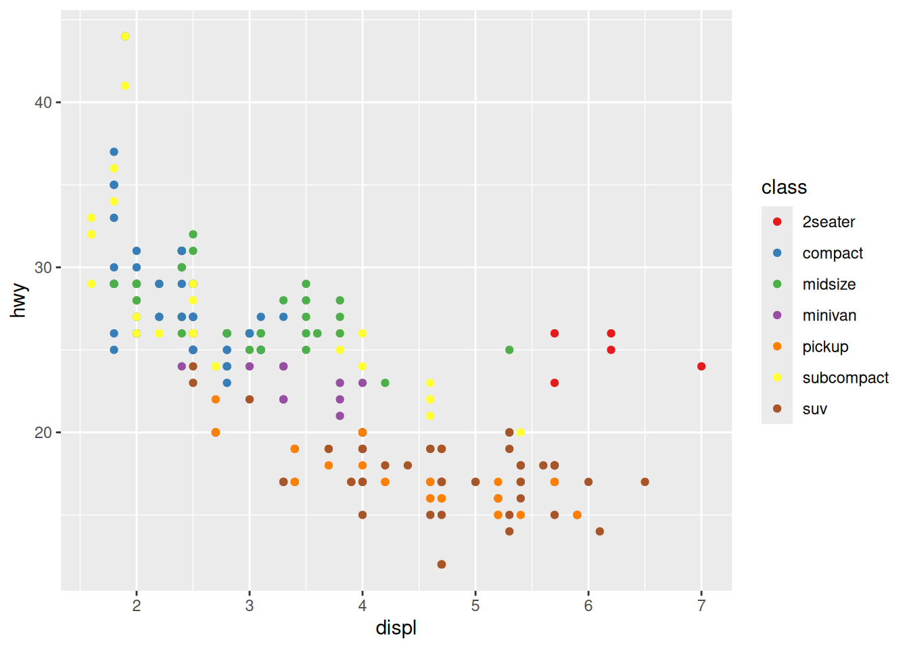
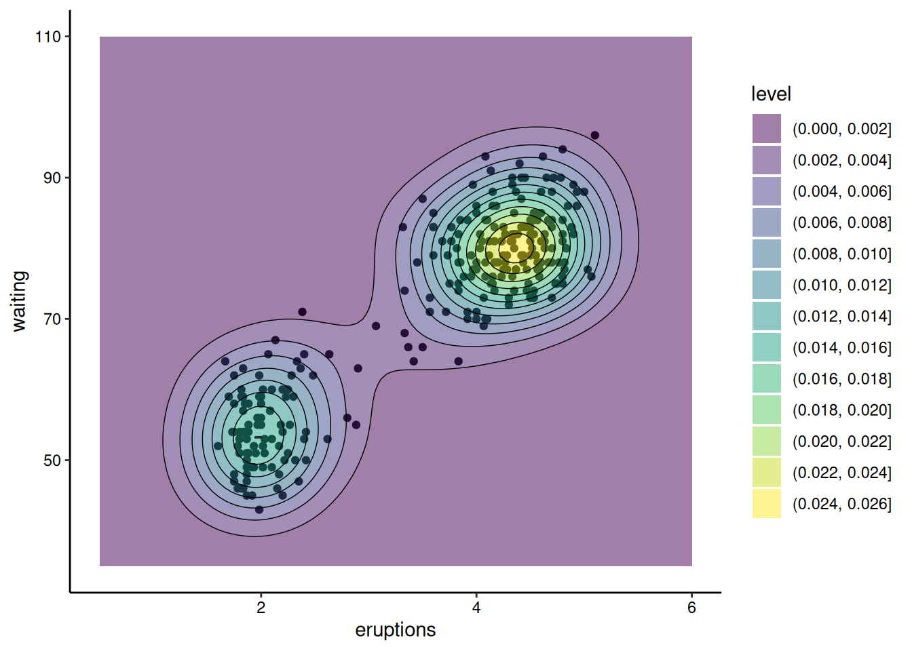

# load the ggplot2 package
library(ggplot2)ggplot2 Data Visualization Practical
Getting familiar with ggplot2
ggplot2 is designed around the “grammar of graphics”. In most cases you start with ggplot() and then supply a dataset and “aesthetic” mappings (with aes()). You then add on individual layers (like geom_point() or geom_histogram()) to add the visualization(s) that you want. Let’s first try making a scatterplot using some built-in data about car mileage (mpg). In this case, we’ll plot the highway mileage with respect to the engine size (displacement). Note that in this case, instead of calling functions separately, we chain them together with the + operator.
# check out the mileage data
head(mpg)# A tibble: 6 × 11
manufacturer model displ year cyl trans drv cty hwy fl class
<chr> <chr> <dbl> <int> <int> <chr> <chr> <int> <int> <chr> <chr>
1 audi a4 1.8 1999 4 auto(l5) f 18 29 p compa…
2 audi a4 1.8 1999 4 manual(m5) f 21 29 p compa…
3 audi a4 2 2008 4 manual(m6) f 20 31 p compa…
4 audi a4 2 2008 4 auto(av) f 21 30 p compa…
5 audi a4 2.8 1999 6 auto(l5) f 16 26 p compa…
6 audi a4 2.8 1999 6 manual(m5) f 18 26 p compa…ggplot(mpg, aes(x = displ, y = hwy)) +
geom_point()
You’ll notice that with just a couple of lines, we’ve already made a pretty nice visualization. ggplot2 does most of the work for us once we specify our x and y variables. Let’s go a step further and color the points by another variable (e.g., the class of the car). With ggplot2, all that requires is specifying another aesthetic:
ggplot(mpg, aes(x = displ, y = hwy, color = class)) +
geom_point()
Notice that ggplot2 comes with its own default color scheme. I would strongly discourage you from using the default colors. Instead, we’ll try out some of the accessible color palettes we talked about earlier. First, let’s try one of the viridis color palettes. Since this palette is included in ggplot2, all we need to do is add the proper “scale” to our ggplot() call.
ggplot(mpg, aes(x = displ, y = hwy, color = class)) +
geom_point() +
scale_color_viridis_d()Hmm…with this many colors, it becomes a little hard to distinguish between the colors with this color palette. Let’s try one of the brewer color palettes.
ggplot(mpg, aes(x = displ, y = hwy, color = class)) +
geom_point() +
scale_color_brewer(palette = "Set1")
Outside of color, there are many other aspects of the graph that we can modify using “scale”s. For example, we can modify the x and y axes:
ggplot(mpg, aes(x = displ, y = hwy, color = class)) +
geom_point() +
scale_color_brewer(name = "Vehicle Class", palette = "Set1") +
scale_x_continuous(name = "Engine Displacement (l)") +
scale_y_continuous(name = "Highway Mileage (mpg)")Theming
The last basic thing you might want to do with ggplot2 is modify the style of the visualization. This is extremely customizable, but the first place to start is with a built-in theme. I personally prefer the classic theme:
ggplot(mpg, aes(x = displ, y = hwy, color = class)) +
geom_point() +
scale_color_brewer(name = "Vehicle Class", palette = "Set1") +
scale_x_continuous(name = "Engine Displacement (l)") +
scale_y_continuous(name = "Highway Mileage (mpg)") +
theme_classic()Using this built-in theme has changed many visual aspects of the graph, including changing the plot background color, adding axis lines, and removing the internal grid lines. If you look very closely, however, the axis tick labels are still a slight grey. We can use the theme() function to further customize the appearance and change this. In this case, we’ll make the axis text elements have a black color.
ggplot(mpg, aes(x = displ, y = hwy, color = class)) +
geom_point() +
scale_color_brewer(name = "Vehicle Class", palette = "Set1") +
scale_x_continuous(name = "Engine Displacement (l)") +
scale_y_continuous(name = "Highway Mileage (mpg)") +
theme_classic() +
theme(axis.text = element_text(color = "black"))And there we have it! With just 7 lines we’ve created what I would say is a publication quality graph! ggplot does a lot of the tedious work for you, giving you time to focus on the more important aspects, such as labeling and color. Admittedly, I’ve spent a LOT of time on these aspects in the past…
More information about all of the hierarchical theme components that you can customize is available here. In order to change many of these components, you need to use theme elements like we did above with element_text(). That and other theme elements are documented here.
More complex features
Other layers
There are many other types of plots that we can make with ggplot2.
Histograms
We can visualize the density of values for a single variable with a histogram:
ggplot(mpg, aes(x = hwy)) +
geom_histogram() +
scale_x_continuous(name = "Highway Mileage (mpg)") +
theme_classic() +
theme(axis.text = element_text(color = "black"))Note how histograms don’t require a y-axis aesthetic by default. The counts are tabulated for you.
Boxplots and Violin Plotss
We can visualize the density of values for a single variable across a discrete variable with boxplots or violin plots:
ggplot(mpg, aes(x = as.factor(cyl), y = hwy)) +
geom_boxplot() +
scale_x_discrete(name = "# Cylinders") +
scale_y_continuous(name = "Highway Mileage (mpg)") +
theme_classic() +
theme(axis.text = element_text(color = "black"))ggplot(mpg, aes(x = as.factor(cyl), y = hwy)) +
geom_violin(scale = "width", draw_quantiles = c(0.25, 0.5, 0.75)) +
scale_x_discrete(name = "# Cylinders") +
scale_y_continuous(name = "Highway Mileage (mpg)") +
theme_classic() +
theme(axis.text = element_text(color = "black"))Note that many of these “geom”s have lots of options. For example, we’ve decided to scale all of the violin plots to the same width and to draw the quartiles on them (mimicking the boxplots above).
2D Contours
We can also visualize the density of values across two continuos variables using a 2D contour. Here we’ll use the built-in Old Faithful waiting time/eruption duration data (faithful). We’ll expand the axes a little bit to better show the contours:
ggplot(faithful, aes(x = eruptions, y = waiting)) +
geom_density_2d(linewidth = 0.25, colour = "black") +
xlim(0.5, 6) +
ylim(35, 110) +
theme_classic() +
theme(axis.text = element_text(color = "black"))Time Series
We’ll use the built-in economics dataset to explore visualizing a time series. In this case, we are looking at unemployment over time:
ggplot(economics, aes(x = date, y = unemploy)) +
geom_line() +
theme_classic() +
theme(axis.text = element_text(color = "black"))
geom_path() lets you explore how two variables are related over time. For example, unemployment and personal savings rate:
ggplot(economics, aes(x = unemploy/pop, y = psavert)) +
geom_path(aes(colour = as.numeric(date))) +
theme_classic() +
theme(axis.text = element_text(color = "black"))
Note how we’ve used multiple columns of the data to define the x-axis here.
Combining layers
We can also combine multiple layers to show the same data in different ways in the same plot. For example, we could show the raw data for the above contour plot in addition to the contours:
ggplot(faithful, aes(x = eruptions, y = waiting)) +
geom_point() +
geom_density_2d_filled(alpha = 0.5) +
geom_density_2d(linewidth = 0.25, colour = "black") +
xlim(0.5, 6) +
ylim(35, 110) +
theme_classic() +
theme(axis.text = element_text(color = "black"))
Note that, when combining layers, the layers are added to the plot in order, so in this case the points are the bottom layer and the contour lines are the top layer. We changed the alpha of the middle layer to prevent the points from being blocked.
Facetting
Let’s take our scatterplot example from earlier and make it a little more complex with another aesthetic:
ggplot(mpg, aes(x = displ, y = hwy, color = class, shape = drv)) +
geom_point() +
scale_color_brewer(name = "Vehicle Class", palette = "Set1") +
scale_shape_discrete(name = "Drive Type") +
scale_x_continuous(name = "Engine Displacement (l)") +
scale_y_continuous(name = "Highway Mileage (mpg)") +
theme_classic() +
theme(axis.text = element_text(color = "black"))Now, what if we wanted to also split the data by the years the cars were manufactured? We’re already using color and shape, so what other aesthetic could we use? We could possible use some shapes that have both a fill and outline color, but that sounds messy. Instead of using another aesthetic, we could also use a facet. This splits the chart into multiple panels:
ggplot(mpg, aes(x = displ, y = hwy, color = class, shape = drv)) +
geom_point() +
scale_color_brewer(name = "Vehicle Class", palette = "Set1") +
scale_shape_discrete(name = "Drive Type") +
scale_x_continuous(name = "Engine Displacement (l)") +
scale_y_continuous(name = "Highway Mileage (mpg)") +
facet_wrap(vars(year)) +
theme_classic() +
theme(axis.text = element_text(color = "black"))We can get even crazier by faceting by multiple variables:
ggplot(mpg, aes(x = displ, y = hwy, color = class, shape = drv)) +
geom_point() +
scale_color_brewer(name = "Vehicle Class", palette = "Set1") +
scale_shape_discrete(name = "Drive Type") +
scale_x_continuous(name = "Engine Displacement (l)") +
scale_y_continuous(name = "Highway Mileage (mpg)") +
facet_grid(rows = vars(cyl), cols = vars(year)) +
theme_classic() +
theme(axis.text = element_text(color = "black"))OK, maybe we’ve gone a little too far here, but you get the picture!
Visualizing paleo data
Now let’s take a stab at visualizing some paleo data! First, let’s load and prepare the packages we are going to need.
library(palaeoverse) # for data
library(ggplot2) # for plots
library(deeptime) # for fun plot additionsNow let’s prepare our reef data like we learned before:
# Assign a common time scale based on an interval key
data(reefs)
reefs <- look_up(occdf = reefs,
early_interval = "interval",
late_interval = "interval",
int_key = interval_key)
# Remove pre-Phanerozoic data to focus our study
reefs <- subset(reefs, interval_max_ma <= 541)
# Extract Phanerozoic stage-level stages for time bins
bins <- time_bins(interval = "Phanerozoic", rank = "stage")
# bin_time requires "max_ma" and "min_ma" columns
colnames(reefs)[which(colnames(reefs) == "interval_max_ma")] <- "max_ma"
colnames(reefs)[which(colnames(reefs) == "interval_min_ma")] <- "min_ma"
reefs <- bin_time(occdf = reefs, bins = bins, method = "all")
# Bin occurrence data
reefs_time <- group_apply(occdf = reefs, group = c("bin_assignment", "bin_midpoint"), fun = nrow)
# Clean these columns up
reefs_time$bin_assignment <- as.numeric(reefs_time$bin_assignment)
reefs_time$bin_midpoint <- as.numeric(reefs_time$bin_midpoint)
# Check output
head(reefs_time) nrow bin_assignment bin_midpoint
1 3 102 0.00210
2 3 101 0.00620
3 3 100 0.00995
4 117 99 0.07035
5 52 98 0.45150
6 34 97 1.28700In the previous practical you plotted this data using base R graphics. Now we’ll do the same but using ggplot2:
ggplot(reefs_time, aes(x = bin_midpoint, y = nrow)) +
geom_line() +
scale_x_reverse("Time (Ma)", limits = c(541, 0), expand = expansion(0, 0)) +
scale_y_continuous("Number of reefs per stage") +
theme_classic() +
theme(axis.text = element_text(color = "black"))Timescales
The deeptime package allows us to add a timescale to a ggplot2 plot with a single line (just like palaeoverse does in base R graphics). coord_geo() is one of many coordinate systems that exist in the ggplot2 ecosystems. Often coordinate systems are used to alter the positions of aesthetics, but in this case coord_geo() adds a timescale to one or more of the axes:
ggplot(reefs_time, aes(x = bin_midpoint, y = nrow)) +
geom_line() +
scale_x_reverse("Time (Ma)") +
scale_y_continuous("Number of reefs per stage") +
coord_geo(xlim = c(541, 0)) +
theme_classic() +
theme(axis.text = element_text(color = "black"))We can stack multiple timescales or have timescales on multiple sides:
ggplot(reefs_time, aes(x = bin_midpoint, y = nrow)) +
geom_line() +
scale_x_reverse("Time (Ma)") +
scale_y_continuous("Number of reefs per stage") +
coord_geo(
dat = list("periods", "eras"), xlim = c(542, 0),
pos = list("b", "b"), abbrv = list(TRUE, FALSE)
) +
theme_classic() +
theme(axis.text = element_text(color = "black"))ggplot(reefs_time, aes(x = bin_midpoint, y = nrow)) +
geom_line() +
scale_x_reverse("Time (Ma)") +
scale_y_continuous("Number of reefs per stage") +
coord_geo(
dat = list("periods", "eras"), xlim = c(542, 0),
pos = list("b", "t"), abbrv = list(TRUE, FALSE)
) +
theme_classic() +
theme(axis.text = element_text(color = "black"))Timescale color palettes
Instead of a line graph/time series, we could plot these reef counts as a bar graph (geom_col() in this case). However, to give a little more life to our graph, we’ll go ahead and color each bar based on the official geological timescale color palette (included in deeptime). First we need to get the stage names and the beginnings and ends of the bins.
# Get stage names
reefs_time$stage <- bins$interval_name[reefs_time$bin_assignment]
# Get beginning and end of bins
reefs_time$bin_max_ma <- bins$max_ma[reefs_time$bin_assignment]
reefs_time$bin_min_ma <- bins$min_ma[reefs_time$bin_assignment]Then we can go ahead and make the desired bar graph:
ggplot(reefs_time, aes(x = bin_midpoint, y = nrow, fill = stage)) +
geom_col(aes(width = bin_max_ma - bin_min_ma)) +
scale_x_reverse("Time (Ma)") +
scale_y_continuous("Number of reefs per stage") +
scale_fill_geo(dat = "stages", guide = "none") +
coord_geo(xlim = c(541, 0)) +
theme_classic() +
theme(axis.text = element_text(color = "black"))We could also group the stages by era and color them based on that:
reefs_time$era <- cut(reefs_time$bin_midpoint,
breaks = c(0, 66, 252, 542),
labels = c("Cenozoic", "Mesozoic", "Paleozoic"))
ggplot(reefs_time, aes(x = bin_midpoint, y = nrow, fill = era)) +
geom_col(aes(width = bin_max_ma - bin_min_ma)) +
scale_x_reverse("Time (Ma)") +
scale_y_continuous("Number of reefs per stage") +
scale_fill_geo(dat = "eras", guide = "none") +
coord_geo(xlim = c(541, 0)) +
theme_classic() +
theme(axis.text = element_text(color = "black"))Plot occurrences through time
A common graph in paleontology is stratigraphic occurrences of taxa through time. The palaeoverse and deeptime packages have functions to instantly create graphs like these based on occurrence data. I’ll focus on the deeptime version here since it uses ggplot2. First we’ll grab some tetrapod occurrence data from the palaeoverse package and clean it up a little:
occdf <- subset(tetrapods, accepted_rank == "genus")
occdf <- subset(occdf, select = c(occurrence_no, accepted_name,
max_ma, min_ma))
occdf$age <- (occdf$max_ma + occdf$min_ma) / 2
occdf <- subset(occdf, accepted_name %in% c("Eryops", "Dimetrodon",
"Diadectes", "Diictodon",
"Ophiacodon", "Diplocaulus",
"Benthosuchus"))Now we’ll use geom_points_range() to plot the occurrences as points and ranges:
# plot those occurrences
ggplot(data = occdf) +
geom_points_range(aes(x = age, y = accepted_name)) +
scale_x_reverse(name = "Time (Ma)") +
coord_geo(pos = list("bottom", "bottom"),
dat = list("stages", "periods"),
abbrv = list(TRUE, FALSE), expand = TRUE, size = "auto") +
theme_classic()And that’s that!